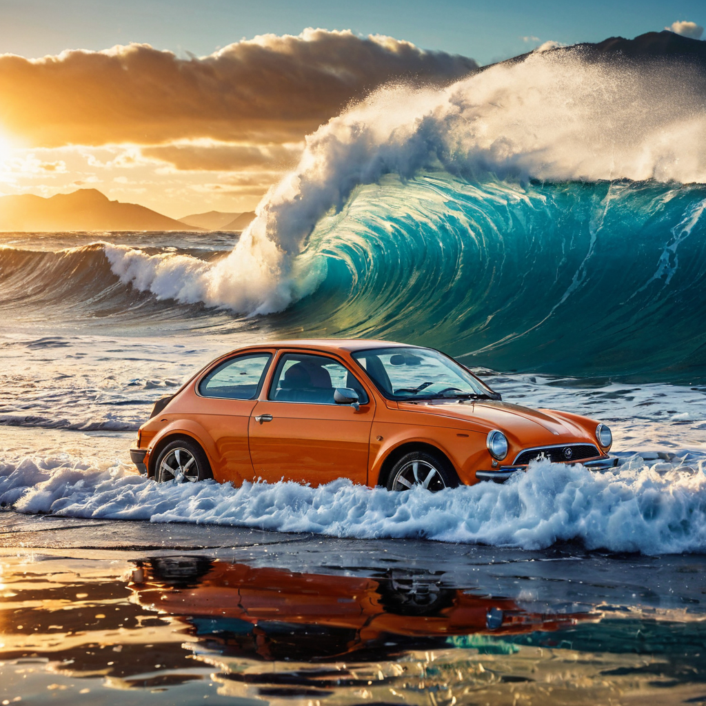

 2025-10-10_09-33-09_4203.png | | Prompt | car with a tsunami in back |
| Negative Prompt | |
| Fooocus V2 Expansion | car with a tsunami in back, detailed, intricate, elegant, highly colorful, vivid color, sharp focus, dramatic, dynamic, vibrant, attractive, cinematic, new, creative, sunny, open, futuristic, professional, extremely inspired, stunning, cute, beautiful, pretty, friendly, great, relaxed, peaceful, cool, awesome, full, amazing, flowing, symmetry |
| Styles | ['Fooocus V2', 'Fooocus Enhance'] |
| Performance | Quality |
| Steps | 60 |
| Resolution | (1024, 1024) |
| Guidance Scale | 4.5 |
| Sharpness | 6 |
| ADM Guidance | (1.5, 0.8, 0.3) |
| Base Model | juggernautXL_ragnarokBy.safetensors |
| Refiner Model | None |
| Refiner Switch | 0.6 |
| CLIP Skip | 2 |
| Sampler | dpmpp_2m_sde_gpu |
| Scheduler | karras |
| VAE | Default (model) |
| Seed | 1117864645170847285 |
| Backend Engine | SDXL-Fooocus |
| Metadata Scheme | False |
| Version | Fooocus 2.5.5, SimpleSDXL2 20240916, FooocusPlus 0.9.6 Beta7 |
| Full raw prompt | Positivecar with a tsunami in back, car with a tsunami in back, detailed, intricate, elegant, highly colorful, vivid color, sharp focus, dramatic, dynamic, vibrant, attractive, cinematic, new, creative, sunny, open, futuristic, professional, extremely inspired, stunning, cute, beautiful, pretty, friendly, great, relaxed, peaceful, cool, awesome, full, amazing, flowing, symmetryNegative(worst quality, low quality, normal quality, lowres, low details, oversaturated, undersaturated, overexposed, underexposed, grayscale, bw, bad photo, bad photography, bad art:1.4), (watermark, signature, text font, username, error, logo, words, letters, digits, autograph, trademark, name:1.2), (blur, blurry, grainy), morbid, ugly, asymmetrical, mutated malformed, mutilated, poorly lit, bad shadow, draft, cropped, out of frame, cut off, censored, jpeg artifacts, out of focus, glitch, duplicate, (airbrushed, cartoon, anime, semi-realistic, cgi, render, blender, digital art, manga, amateur:1.3), (3D ,3D Game, 3D Game Scene, 3D Character:1.1), (bad hands, bad anatomy, bad body, bad face, bad teeth, bad arms, bad legs, deformities:1.3) |
|